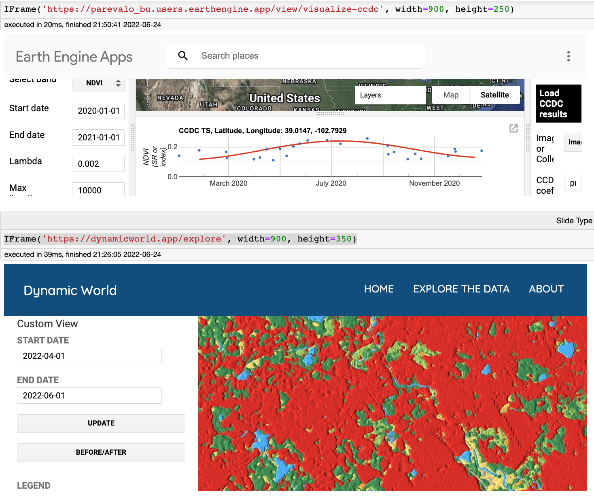
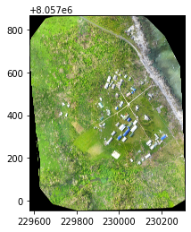
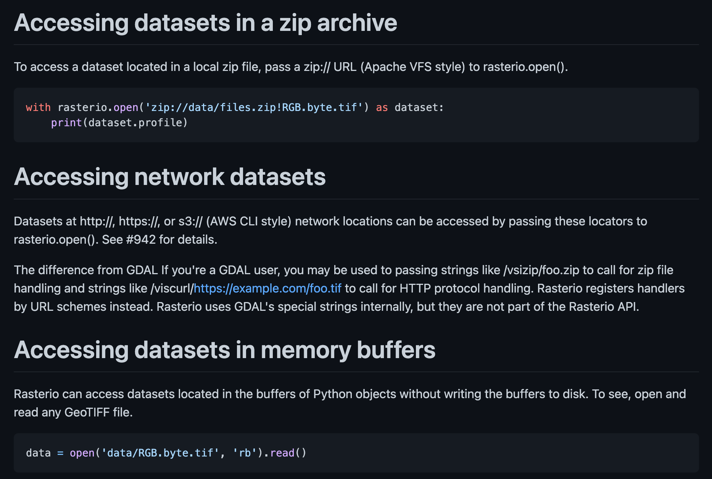

The authorization workflow will generate a code, which you should paste in the box below.
Enter verification code: 4/1AdQt8qj3v8rTEDbl7P9PPACFbCuB8XihLrACRsxF1sky8UAm_QDsziMXdlQ
Successfully saved authorization token.
# Example point of interest to filter the image collection.point = ee.Geometry.Point([-75.92, 2.86])# Get and filter the Sentinel-2 Surface Reflectance image collection and filter it by region and time.S2 = (ee.ImageCollection('COPERNICUS/S2_SR') .filterDate('2020-01-01','2021-01-01').filterBounds(point))# Cloud Probability masking is the default method to mask clouds and shadows in Sentinel-2 (method = 'cloud_prob'). By default, the Cloud Probability threshold is 60% (prob = 60).S2c = S2.maskClouds()
# Visualization# Set the visualization parameters.rgbUnscaled = {'min':0, 'max':3000, 'bands':['B4','B3','B2']}# Use geemap to display results.Map = geemap.Map()Map.centerObject(point,15)Map.addLayer(S2c.median(),rgbUnscaled,'60% Cloud Probability masking')Map
In case of bad internet / viewing in a repo - here is what the map looks like 
Rasterio
Rasterio reads and writes geospatial raster data.
Geographic information systems use GeoTIFF and other formats to organize and store gridded, or raster, datasets. Rasterio reads and writes these formats and provides a Python API based on N-D arrays.
import rasteriofrom rasterio.plot import showwith rasterio.open("https://oin-hotosm.s3.amazonaws.com/56f9b5a963ebf4bc00074e70/0/56f9c2d42b67227a79b4faec.tif") as src: show(src)

In case of bad internet / viewing in a repo, here is what the output looks like: 
High Level - Remote Sensing Pipeline
I’ll be giving the hight level data flow with small demonstrate in code - with the goal of providing an easy starting point to fill the “pipeline” with steps relevant to individual projects.
#Reset to png output with: %setdiagpng# Hide the input for the diagram after coding
Filter images by geographical bounds and time range
Clip images by shape (different than filtering).
Cloud removal
Calculate spectral indices (research based measures for various ecological phenomena)
Technically part of processing, but many spectral indices are so common they are often used as input features for additional analysis
There are ready made libraries to calculate them: https://github.com/awesome-spectral-indices/spectral
Calculate derived shapes if relevant
Javascript Libraries
I focus on Python APIs in this presentation as they allow us to work with one programming language accross the pipeline, though Google Earth Engine has a language agnostic (REST) API, and an online coding environment using JavaScript (albeit with a slightly limited syntax) as it’s coding language, accessible via code.earthengine.google.com.
If you come accross useful code written in JavaScript, conversion isn’t too hard if you know both languages’ syntax (main challenges are anonymous functions and dictionary parameters changing into keyword parameters in Python). Google provides some support for converting code from JavaScript to Python, demonstrated in this notebook.
In case of bad internet / viewing in a repo - here is what the documentation looks like
3. Processing on Google Cloud
Use Google Cloud via Google Earth Engine to run algorithms directly on large inputs (to save on data transfers and taking advantage of Google’s Cloud).
Custom code running on a Google Cloud Platform (i.e. custom made Tensorflow models).
Google Earth Client v.s. Server Computations
It is important to distinguish Earth Engine objects from Python objects or primitives that might be in your code. You can manipulate objects on the server by manipulating client-side “proxy” objects in your script. You can recognize a proxy object as anything starting with ee.
These Earth Engine proxy objects do not contain any actual data and are just handles for objects on the server.
More information (worth reading) can be found here.
Once asked to run (by running an export or calling .getInfo() on an object) these operations are performed asynchronously on automatically assigned Google Cloud platforms.
Their speed will depend on general usage and the size of the task. Some tasks might fail, requiring reducing the area of interest / amount of images analysed to complete.
LANDSAT_8 = ee.ImageCollection('LANDSAT/LC08/C02/T1_L2')BIT_31 ='11111'DEC_31 =int(BIT_31, 2)# Define a function that scales and masks Landsat 8 surface reflectance images.def prepSrL8(image):# Develop masks for unwanted pixels (fill, cloud, cloud shadow).# https://www.usgs.gov/media/images/landsat-collection-2-pixel-quality-assessment-bit-index# image.select - Returns an image with the selected bands qaMask = image.select('QA_PIXEL').bitwiseAnd(DEC_31).eq(0)# https://www.usgs.gov/landsat-missions/landsat-collection-2-quality-assessment-bands saturationMask = image.select('QA_RADSAT').eq(0) img_dict = image.toDictionary()# Apply the scaling factors to the appropriate bands.def getFactorImg(factorNames): factorList = img_dict.select(factorNames).values()return ee.Image.constant(factorList)# select accepts regular exceptions scaleImg = getFactorImg( ['REFLECTANCE_MULT_BAND_.|TEMPERATURE_MULT_BAND_ST_B10']) offsetImg = getFactorImg( ['REFLECTANCE_ADD_BAND_.|TEMPERATURE_ADD_BAND_ST_B10']) scaled = image.select('SR_B.|ST_B10').multiply(scaleImg).add(offsetImg)# Replace original bands with scaled bands and apply masks.# Image.addBands(srcImg, names, overwrite)return image \ .addBands(scaled, None, True) \ .updateMask(qaMask) \ .updateMask(saturationMask)first_start_date ='2021-03-01'first_end_date ='2021-07-01'first_date_images = LANDSAT_8.filterDate(first_start_date, first_end_date)# Make a cloud-free Landsat 8 surface reflectance composite.first_image = first_date_images.map(prepSrL8).median()# Use these bands for prediction.rgb_bands = ['SR_B4', 'SR_B3', 'SR_B2']non_visual_wavelengths = ['SR_B5', 'SR_B6', 'SR_B7']temp_bands = ['ST_B10']wavelengths_with_temp_bands = rgb_bands + non_visual_wavelengths + temp_bands# SR_B2 Band 2 (blue) surface reflectance# SR_B3 Band 3 (green) surface reflectance# SR_B4 Band 4 (red) surface reflectance# SR_B5 Band 5 (near infrared) surface reflectance# SR_B6 Band 6 (shortwave infrared 1) surface reflectance# SR_B7 Band 7 (shortwave infrared 2) surface reflectance# ST_B10 Band 10 surface temperature. If 'PROCESSING_LEVEL' is set to 'L2SR', this band is fully masked out.first_prediction_bands = first_image.select(wavelengths_with_temp_bands)# Load training points. The numeric property 'class' stores known labels.points = ee.FeatureCollection('GOOGLE/EE/DEMOS/demo_landcover_labels')# This property stores the land cover labels as consecutive integers starting from zero.landcover_label ='landcover'# Overlay the points on the imagery to get training.first_training = first_prediction_bands.sampleRegions(**{'collection': points,'properties': [landcover_label],'scale': 30})# Train a CART classifier with default parameters.first_trained = ee.Classifier.smileCart().train( first_training, landcover_label, wavelengths_with_temp_bands)# Classify the image with the same bands used for training.first_classified = first_image.select( wavelengths_with_temp_bands).classify(first_trained)ClassificationMap = geemap.Map()# Display the inputs and the results.ClassificationMap.setCenter(-122.0877, 37.7880, 11)ClassificationMap.addLayer(first_image, {'bands': rgb_bands, 'min': 0, 'max': 0.25},'sat-image')ClassificationMap.addLayer(first_classified, {'min': 0, 'max': 2, 'palette': ['orange', 'green', 'blue']},'classification')
ClassificationMap
In case of bad internet / viewing in a repo - here is what the map looks like
Ending A: Display data on Google Earth Engine
In some cases, keeping our code and data on Google Earth Engine is enough, as the platform provides us with the ability to: - generate interactive maps with embedded layers and data - displayed in notebooks or using the JavaScript API - code apps running wholely on the Google Earth Engine plaform - only using the JavaScript API (i.e. CCDC Tools, Dynamic World)
In case of bad internet / viewing in a repo - here is what the apps looks like
Advantages:
Less code to handle
Google provided basemap
No additional costs for hosting / map access
Disadvantages:
Vendor lock-in
Limited access to data outside the platform (mainly by uploading to GCS / Google Earth Engine directly)
Requires using Google Cloud and learning Google Earth Engine APIs to run custom code
UI is limited to Google Earth Engine APIs
Licensing limitations due to code running on Google Platform
4. Exporting data
Google Earth Engine provides library support to export the following: - Tables - data in columns and rows, i.e. CSV data - Images - 3D arrays of data (multiband images) with various data types and additional metadata - i.e. GeoTiff data - Maps - a rectangular pyramid of map tiles for use with web map viewers (images at different zoom levels).
Data can be exported to - Google Earth Engine as assets - Google Drive as files - Google Cloud Storage as files on “bucket” storage (storage with no predefined size limit and apis used for ease in streaming the data). * Note: GeoTIFS in Google Cloud Storage can be read directly using the ee.Image.loadGeoTIFF static method (docs).
one_hour_in_secs =60*60def task_status(task_id):"""Fetches the current status of the task. Returns: A dictionary describing the current status of the task as it appears on the EE server. Includes the following fields: - state: One of the values in Task.State. - creation_timestamp_ms: The Unix timestamp of when the task was created. - update_timestamp_ms: The Unix timestamp of when the task last changed. - output_url: URL of the output. Appears only if state is COMPLETED. - error_message: Failure reason. Appears only if state is FAILED. May also include other fields. """ result = ee.data.getTaskStatus(task_id)[0]if result['state'] =='UNKNOWN': result['state'] = ee.batch.Task.State.UNSUBMITTEDreturn resultdef is_task_active(task_id):"""Returns whether the task is still running."""return task_status(task_id)['state'] in (ee.batch.Task.State.READY, ee.batch.Task.State.RUNNING, ee.batch.Task.State.CANCEL_REQUESTED)def wait_for_task_to_finish(task, end_msg=""):while task.active():print('Polling for task (id: {}).'.format(task.id)) time.sleep(5) status = task.status()print(status)if (status['state'] !='FAILED'):if end_msg:print(end_msg)returnTrue, statuselse:returnFalse, statusdef wait_for_task_id_to_finish(task_id, end_msg=""):while is_task_active(task_id):print('Polling for task (id: {}).'.format(task_id)) time.sleep(5) status = task_status(task_id)print(status)if (status['state'] !='FAILED'):if end_msg:print(end_msg)returnTrue, statuselse:print(f"Completed with status '{status}'")returnFalse, statusdef run_export_func_sync(export_func, table_output, output_filename, output_bucket): task = export_func(table_output, output_filename, output_bucket) task.start() wait_for_task_to_finish( task, f'Task {task.id} is done, saved to {output_filename}')
def generate_export_image_to_storage_task(img_output, output_filename, output_bucket): image, region = img_output# Export a GeoTIF file to Cloud Storage.return ee.batch.Export.image.toCloudStorage(**{'image': image,'region':region,'crs': 'EPSG:4326','scale': 10,'maxPixels':1e13,'bucket': output_bucket,'fileNamePrefix': output_filename, })def generate_export_table_to_storage_task(table_output, output_filename, output_bucket):# Export a CSV file to Cloud Storage.return ee.batch.Export.table.toCloudStorage( collection=table_output, bucket=output_bucket, fileNamePrefix=output_filename, )
5. Reading Cloud Images
Access Locally
Copy images locally before processing (in case of a need for faster code access to the image, i.e. multiple reads of the whole image for analysis / usage in an ML model).
with rasterio.open('data/RGB.byte.tif') as dataset:print(dataset.profile)
Access Remotely
Access images remotely via cloud (in case of less frequent read access / need for infrastructure flexibility, i.e a conversion pipeline or displaying the map - assuming data is saved in a “streamable” format - AKA Cloud Optimized GeoTiffs).
with rasterio.open("https://oin-hotosm.s3.amazonaws.com/56f9b5a963ebf4bc00074e70/0/56f9c2d42b67227a79b4faec.tif") as src: show(src)
GDAL and Virtual File Systems
This flexibility in access is possible by using the Geospatial Data Abstraction Library - the de-facto standard for reading / writing raster data, and it’s support for virtual file systems. It also supports reading archived data.
Additional read methods
Some more read / write methods are demonstrated in this gist.
GeoServer is an open source server for sharing geospatial data. Designed for interoperability, it publishes data from any major spatial data source using open standards, including COGs:
https://documentation.maptiler.com/hc/en-us/articles/4404732284305-Imagery-Hosting- GeoTIFF- MapTiler Server is software for self-hosting data produced by the MapTiler platform. Among other
things, it can convert Shapefiles or raster images for super fast map loading, and serve pre- generated map tiles in GeoPackage or MBTiles format.
Custom Built Servers
Libraries that use GDAL as a low level layer for reading GeoTIFFs support streaming raster data from bucket storage and other remote sources, including various libraries used to create tile servers from GeoTIFFs.
Many of the supported libraries are listed on the COG website: https://www.cogeo.org.
For a easy to use Python based server, I recommend Terracotta.
5. Using Rasterio for Raster Analysis
import rasterio# Open a geospatial datasetdataset = rasterio.open("https://oin-hotosm.s3.amazonaws.com/56f9b5a963ebf4bc00074e70/0/56f9c2d42b67227a79b4faec.tif")print(dataset)
# what is the name of this imageimg_name = dataset.nameprint('Image filename: {n}\n'.format(n=img_name))# How many bands does this image have?num_bands = dataset.countprint('Number of bands in image: {n}\n'.format(n=num_bands))# How many rows and columns?rows, cols = dataset.shapeprint('Image size is: {r} rows x {c} columns\n'.format(r=rows, c=cols))
Image filename: https://oin-hotosm.s3.amazonaws.com/56f9b5a963ebf4bc00074e70/0/56f9c2d42b67227a79b4faec.tif
Number of bands in image: 3
Image size is: 25201 rows x 20179 columns
# Does the raster have a description or metadata?desc = dataset.descriptionsmetadata = dataset.metaprint('Raster description: {desc}\n'.format(desc=desc))# What driver was used to open the raster?driver = dataset.driverprint('Raster driver: {d}\n'.format(d=driver))# What is the raster's projection?proj = dataset.crsprint('Image projection:')print(proj)
# What is the raster's "geo-transform"gt = dataset.transformprint('Image geo-transform:\n{gt}\n'.format(gt=gt))print('All raster metadata:')print(metadata)
The rasterio Dataset object we created contains a lot of useful information but it is not directly used to read in the raster image. Instead we will need to access the raster’s bands using the read() method:
# A window is a view onto a rectangular subset of a raster dataset and is described in rasterio by# column and row offsets and width and height in pixels. These may be ints or floats.from rasterio.windows import Windowrow_start =0row_stop =1000col_start =0col_stop =1000window = Window.from_slices((row_start, row_stop), (col_start, col_stop))# Open the second band in our imagedata = dataset.read(window=window)data.shape # check out the dimensions of the image
(3, 1000, 1000)
import numpy as np# What are the image's datatypes?datatype = dataset.dtypesprint('Band datatypes: {dt}'.format(dt=datatype))# How about some image statistics?image_mean = np.mean(data)image_min = np.amin(data)image_max = np.amax(data)image_stddev = np.std(data)print('Image range: {minimum} - {maximum}'.format(maximum=image_max, minimum=image_min))print('Image mean, stddev: {m}, {s}\n'.format(m=image_mean, s=image_stddev))
Ending C: Use Raster Data as Input for Further Computation
As you can see, reading rasterio data generates numpy arrays that can be processed in any Data Analysis / Machine Learning ecosystem. There is no “right” way to proceed - so either use libraries you have experience, or start from tutorials, such as: